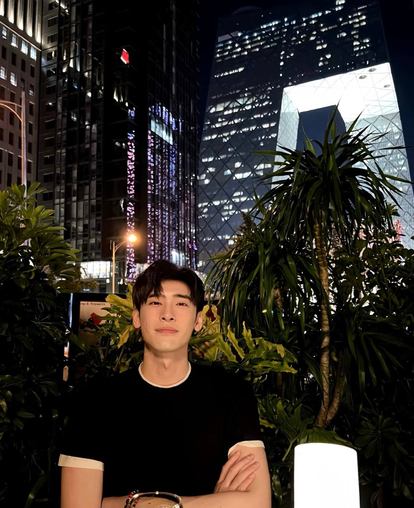

把日子過成自己喜歡的樣子，也留一個位置，給還沒出現的你。
你好，我是林哲，朋友都叫我 Haley。1985 年冬天出生在台北，小時候在爺爺奶奶身邊長大，學會的第一件事是陪奶奶挑菜、看爺爺備料——後來才明白，那是我這輩子最踏實的底色。
大學讀的是新加坡國立大學應用金融，回台灣服完兵役後進了富邦銀行做投資顧問，再後來自己創業。現在手上管著一家高端定制旅行社，也經營烤肉店。事業說大不大，但每一分都是自己一步步走出來的。
新加坡國立大學・商科金融系（應用金融 MAF）
晴天旅遊執行董事・老乾杯台灣區代理（6 家門市）
台北市信義區・信義計畫區核心地段
射手座（Sagittarius）・A 型・屬牛

和當時的女朋友、後來的妻子一起拚雅思、一起留學，是她陪我走出少年時最暗的那段路。
在外島金門服役一年，學會了紀律，也學會了什麼叫責任。
一年內升上部長，看懂了金融的本質，也看懂了自己想走的路。
賺到第一桶金，也摔了最重的一跤。團隊的問題、賠償的壓力，教會我敬畏市場。
重新站起來。旅行社做到年營業額八億台幣，烤肉店一年開了四家分店。
妻子在疫情中離開了我，事業也被疫情逼到瀕臨破產。我選擇不裁員、抵押房子扛下所有——男人該扛的，就要扛。
事業回到正軌，心也慢慢安頓下來。剩下的，想把生活過得有溫度。
荷蘭羊角村的清晨濃霧、紐西蘭特卡波湖的南十字星、南極的冰川——旅行教會我在安靜裡找回自己。
從喝不慣苦澀，到品出苦後回甘。最常喝黑皮諾和拉菲，睡前一杯，像在品味自己的人生。
退伍後朋友帶我上了陽明山馬會，現在馬就養在俱樂部裡。心情不好的時候騎一圈，煩惱就散了。
奶奶說，看到愛的人吃自己做的飯時露出幸福表情，就是她的幸福。這句話我記到現在。
走過山巔，也墜入過低谷，這些年最學會的一件事，是珍惜。
我不抽菸、生活規律，情緒穩定，該扛的責任從不推脫。週末喜歡自己去馬場跑一圈，晚上開一瓶紅酒，配一頓自己做的飯。
如果你也認真地在找一個能好好說話、好好過日子的人——希望下一個故事裡，有你。
平時工作忙，但你的訊息我一定會回。